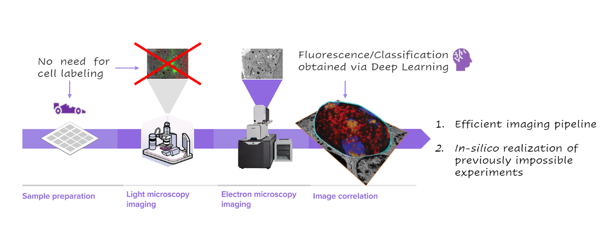

    <!-- About Section -->
    <section id="about" class="container content-section text-center">
        <div class="row">
            <div class="col-lg-8 col-lg-offset-2">
              <br/><br/>
              <h2>About deepCLEM</h2>
              <br/>
                <p>In the field of life sciences, obtaining information on biological processes at different scales is crucial for making new discoveries. 
                Fluorescence microscopy has made significant progress in this area, but it has limitations such as a reliance on fluorescent labels and limitations in high-speed and long-term imaging. 
                Correlative light and electron microscopy (CLEM) has emerged as a promising solution, allowing for the combination of multicolor labeling and multi-resolution contextual investigation in the same area of interest. 
                However, there are still many methodological issues to be addressed, such as the need for more effective sample preparation and dedicated instruments.</p>
                </p>In this project, we propose to address these challenges by using the latest computational tools to develop a deep-learning-based CLEM platform that can operate in a completely label-free manner. 
                This platform aims to bridge the gap between molecular and morphological organization of cells by accelerating the data throughput and minimizing the risk of artifacts during the sample preparation process. This
                will enable the development of new kinds of experiments, representing an innovative tool in correlative microscopy.</p>  
            </div>
            <div class="col-lg-10 col-lg-offset-2">
                
            </div>
            <div class="col-lg-8 col-lg-offset-2">
              <br/>
              <h3>Funding Information</h2>
              <br/>
                <p>The deepCLEM project is funded by the Spanish "<em>Ministerio de Ciencia, Innovación y Universidades-Agencia Estatal de Investigación</em>" and by the "<em>Fondo Europeo de Desarrollo Regional-UE</em>" under grant PID2022-142166NA-I00 (MICIU/AEI/10.13039/501100011033/FEDER, UE).</p>
                <br/>
            </div>
            <div class="col-lg-8 col-lg-offset-2">
              
              <br/><br/>
          </div>
          
        </div>
    </section>
